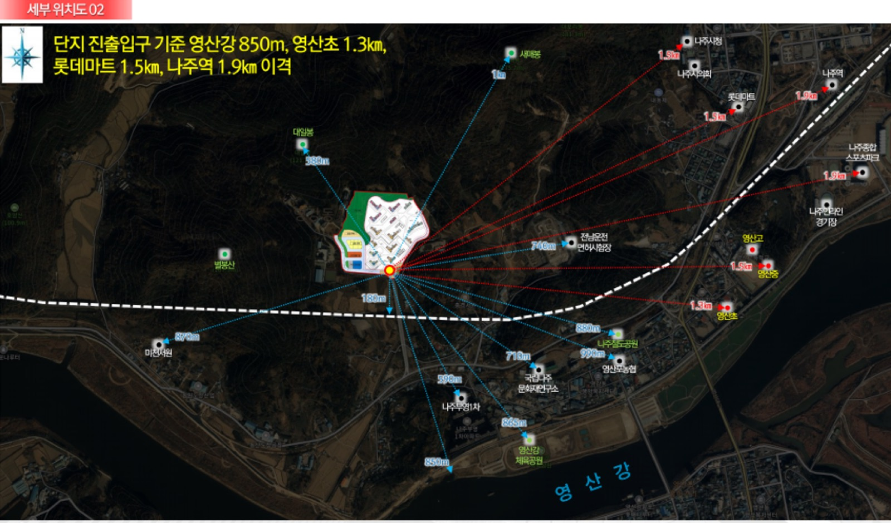
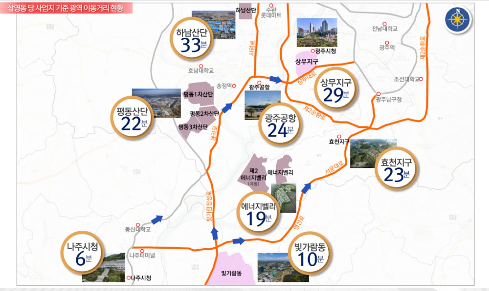
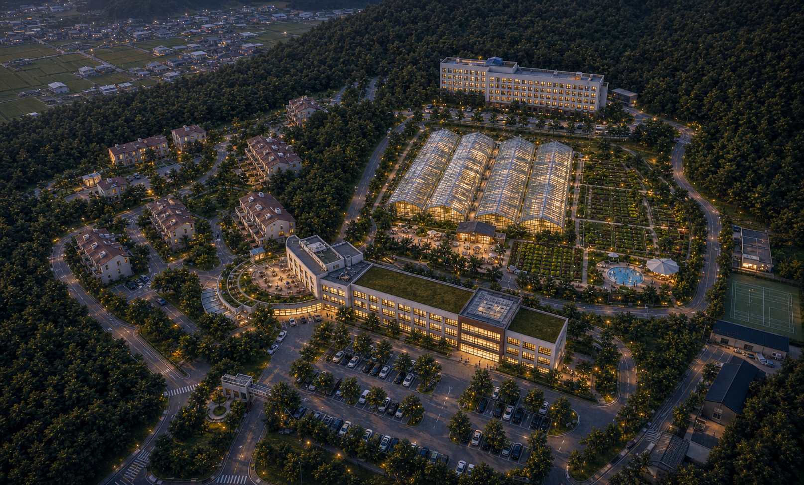
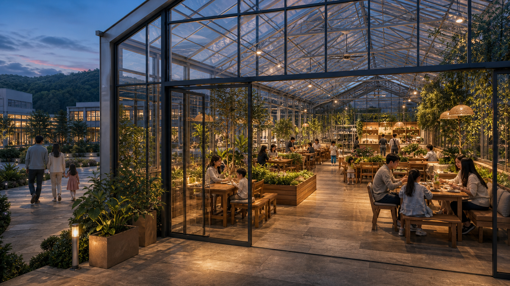

양평 IM의 분석 방식처럼 교통, 인근 거주지, 개발·산업 수요, 운영 리스크를 분해하되, 나주 부지는 병원·종교시설이 아니라 농업 체험·교육·F&B·연수·체류가 결합된 사계절 캠퍼스로 해석합니다.
양평 IM은 서울 접근성과 자연환경을 기반으로 암요양병원·연수원·종교시설 같은 자산가치 전환 논리를 만들었습니다. 나주 부지는 광역 관광 한 방보다, 나주 도심·빛가람 혁신도시·광주 생활권을 묶어 주말 가족 체험과 평일 교육·연수 수요를 동시에 받는 모델이 더 설득력 있습니다.
기존 연수원 자산이 있어 온실, 교육동, F&B, 캠프 기능을 단계적으로 얹기 좋습니다.
나주 도심과 빛가람동은 가깝지만, 일상 유동이 자연스럽게 지나가는 상권형 입지는 아닙니다.
광주공항·상무지구·효천지구·산단권이 20~35분대에 잡혀 단체·기업 수요 설계가 가능합니다.
관광농원, F&B, 숙박, 물놀이, 외국인 근로자 숙소가 섞이면 인허가와 브랜드 리스크가 커집니다.
대상지는 전남 나주시 삼영동 633, 내영산1길 40 일원으로 검토했습니다. 공유 자료상 기존 용도는 교육연구시설이며 자연녹지지역, 대규모 운동장·교육동·기숙사·후생동·주택동이 함께 있는 구조입니다.
| 항목 | 검토 내용 |
|---|---|
| 사업 방향 | 농업 체험, 교육, F&B, 연수, 체류가 결합된 복합문화공간 |
| 대상지 | 전남 나주시 삼영동 633 / 내영산1길 40 |
| 기존 성격 | 교육연구시설, 연수원, 기숙·후생 기능 보유 |
| 규모 | 대지 89,049㎡, 연면적 30,981.56㎡, 건축물 8개동 |
| 주요 활용 후보 | 운동장 온실, 교육동 체험·강의, 후생동 F&B, 기숙사동 체류 기능 |
| 1차 판단 | 전면 신축보다 기존 건물 존치와 단계적 리모델링이 현실적 |

농업 복합문화공간은 지나가는 유동인구보다 목적 방문을 만들어야 합니다. 따라서 생활권별로 방문 이유를 다르게 설계해야 하며, 주말 가족 체험과 평일 교육·연수 수요를 분리해 봐야 합니다.
| 생활권 | 접근성 | 수요 성격 | 적합 프로그램 | 판단 |
|---|---|---|---|---|
| 삼영동·영산포권 | 근거리 생활권 | 지역 주민, 학교·유치원, 가족 소규모 방문 | 어린이 체험, 방과후·주말 프로그램, 로컬푸드 마켓 | 기초 반복 방문의 바닥 수요 |
| 나주 도심권 | 나주시청 약 6분권 | 주말 가족, 단체행사, 공공기관 연계 | 팜카페, 계절 체험, 로컬 축제 연계, 기관 워크숍 | 강점 가장 설명하기 쉬운 기본 수요 |
| 빛가람 혁신도시 | 약 10분권 | 젊은 가족, 공공기관 종사자, 교육·체험 소비층 | 프리미엄 가족 체험, ESG·농업교육, 주말 브런치 | 핵심 객단가와 재방문 설계의 중심 |
| 광주 남부·효천지구 | 약 20분대 | 광주 가족 방문객, 근교 나들이 수요 | 반나절 체험, 온실 사진공간, 수확+F&B 패키지 | 확장 주말 피크를 만드는 권역 |
| 상무·공항·산단권 | 약 24~33분권 | 기업·기관 워크숍, 산단 근로자 복지, 단체 연수 | 평일 연수, 단체 식음, 기업 체험, 팀빌딩 | 평일 주말 편중을 줄이는 권역 |
빛가람동과 광주 남부권은 아이 동반 체험, 사진, 브런치, 계절 이벤트를 묶으면 방문 전환이 가능합니다.
나주·광주권 학교, 공공기관, 에너지밸리 기업은 평일 프로그램의 핵심입니다. 교육동이 있는 점이 유리합니다.
근거리 주민만으로 대형 시설을 채우기는 어렵습니다. 지역권은 기본 방문과 입소문 역할로 보는 편이 안전합니다.
기존 프로젝트 자료의 이동거리 지도에 따르면 나주시청 6분, 빛가람동 10분, 에너지밸리 19분, 평동산단 22분, 광주공항 24분, 상무지구 29분, 하남산단 33분으로 제시되어 있습니다. 이는 주말 가족뿐 아니라 평일 연수·기업 프로그램을 설명하는 근거입니다.

나주 도심과 빛가람동을 즉시 흡수할 수 있어, 주말 체험과 평일 단체 예약의 출발점이 됩니다.
효천·공항·상무권에서 반나절 목적 방문이 가능합니다. 단, 강한 콘텐츠와 예약 동선이 필요합니다.
평동·하남산단은 가족형보다 기업 복지, 교육, 워크숍, 단체 식음 프로그램으로 접근하는 편이 맞습니다.
부지는 규모와 기존 시설이 강점이고, 광주·빛가람 접근권도 좋습니다. 반면 대중적 상권 입지나 유명 관광지 바로 앞 입지는 아니므로, “왜 여기까지 와야 하는지”를 온실·체험·식음·교육으로 명확히 만들어야 합니다.
나주 부지는 모든 기능을 한 번에 섞는 방식보다, 생활지원권과 방문객 체험권을 분리하고 스마트팜 체험온실을 앵커로 삼아 운영 검증 후 확장하는 방식이 적합합니다.
온실은 사진을 찍는 구조물에 그치면 투자 회수가 어렵습니다. 딸기·토마토·엽채류 수확, 어린이 교육, 쿠킹 클래스, 로컬푸드 메뉴, 기업 ESG 워크숍까지 상품 단위로 나눠야 합니다.

운동장, 스마트팜, 교육동 일부, 후생동 일부를 묶어 외부 고객에게 보이는 구역으로 구성합니다.
기숙사동과 근로자 생활지원 기능은 독립 출입, 독립 주차, 독립 운영관리로 분리합니다.
주방, 전기·상수·오수, 소방, 창고, 운영사무실은 공용이 가능하되 책임 주체를 명확히 둡니다.
여름 물놀이와 일회성 체험만으로는 연중 운영이 어렵습니다. 온실을 중심으로 계절별 방문 이유를 만들고, 평일 단체 수요와 주말 가족 수요를 분리 운영해야 합니다.
| 시즌 | 주요 콘텐츠 | 대상 수요 | 매출 포인트 |
|---|---|---|---|
| 봄 | 딸기·허브 수확, 모종 심기, 가족 피크닉 | 가족, 유치원·초등 단체 | 체험권, 디저트, 사진공간 |
| 여름 | 물놀이, 냉방 온실 투어, 야간 프로그램 | 나주·광주 가족, 방학 수요 | 입장권, 음료, 시즌 패키지 |
| 가을 | 수확제, 로컬푸드 마켓, 기업 워크숍 | 기관·기업, 가족 재방문 | 단체 예약, 마켓 수수료, F&B |
| 겨울 | 온실 체험, 쿠킹 클래스, 실내 농업교육 | 학교 단체, 공공기관, 가족 | 교육비, 클래스비, 브런치 |

나주 프로젝트는 방향성보다 실행 조건 확인이 중요합니다. 특히 자연녹지지역, 기존 교육연구시설, 관광농원 검토, F&B·숙박 용도, 온실 설치, 오수·전기 용량을 먼저 확인해야 합니다.